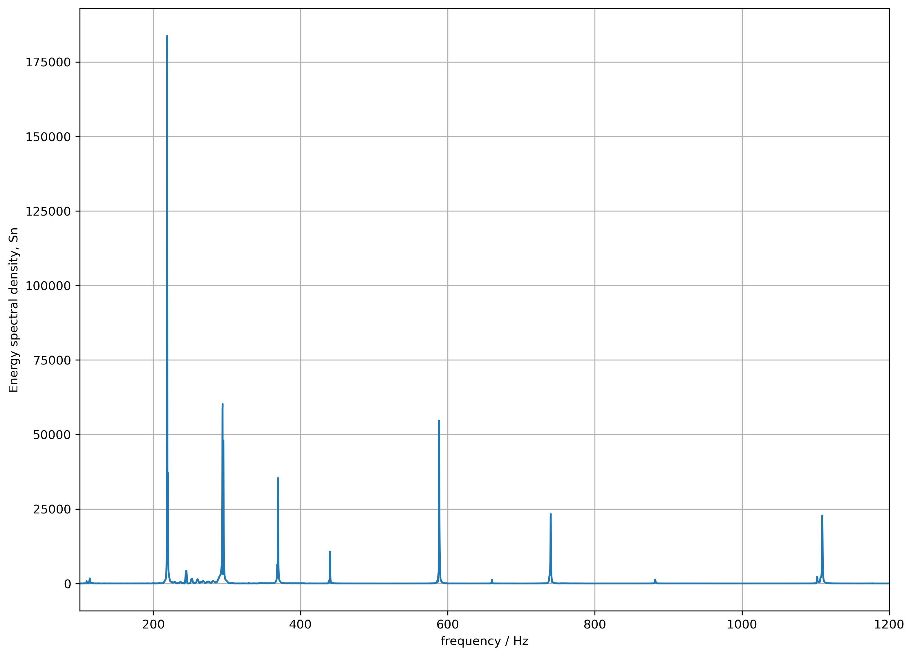

Overview
This project analyzes guitar audio signals to extract fundamental frequencies and map them to musical notes and chords. It uses Fast Fourier Transforms (FFT) to convert time-domain waveforms into the frequency domain.
Key Features
- Reads `.wav` files and performs FFT
- Identifies dominant frequency peaks
- Maps peaks to musical notes using 12-TET tuning
- Infers basic chords from note combinations
- Visualizes waveform and frequency spectrum
FFT Spectrum Example
Technologies Used
- Python
- NumPy, Matplotlib, SciPy
- Librosa (optional for audio processing)
GitHub Repository
github.com/yourgithub/guitar_fft_analysis
Interactive Demo
Try the live app: Launch FFT Analyzer
What I Learned
- How FFT works and its role in audio signal processing
- Translating frequencies to musical notes in code
- Dealing with noisy signals and real-world audio input
- How to visualize and communicate frequency-domain data